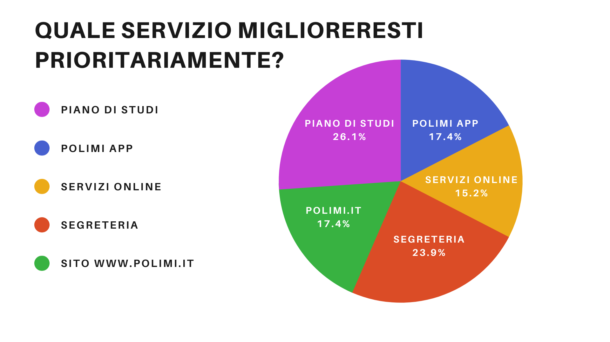

StudentCare Network
Born To Support Students
Born To Support Students
La diffusione del questionario tra gli studenti ha evidenziato come tutti i canali di comunicazione sono percepiti come scomodi e inefficienti, senza particolari distinzioni. Tale feedback è stato essenziale alla delineazione di una soluzione che si sviluppi in questo dominio in modo approfondito e totale. Il bisogno dei nostri utenti target si conferma quindi come una necessità trasversale tutti i campi interessati dal dominio.
Allo stesso tempo le risposte al questionario ci hanno consentito di individuare una serie di differenze sul gradimento dei diversi canali comunicativi. Sotto questo aspetto il questionario è stato utile anche come ulteriore prova delle diverse difficoltà sperimentate da diverse categorie di utenti.
Supporto audiovisivo
Intervistatore
Trascrittore
Supporto audiovisivo
Intervistratrice
Trascrittore